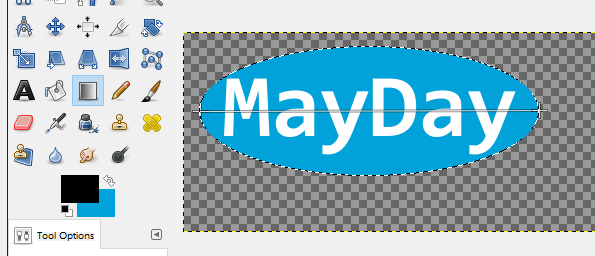
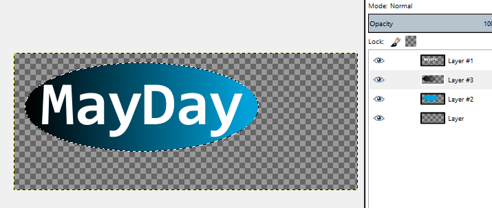
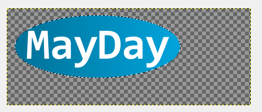
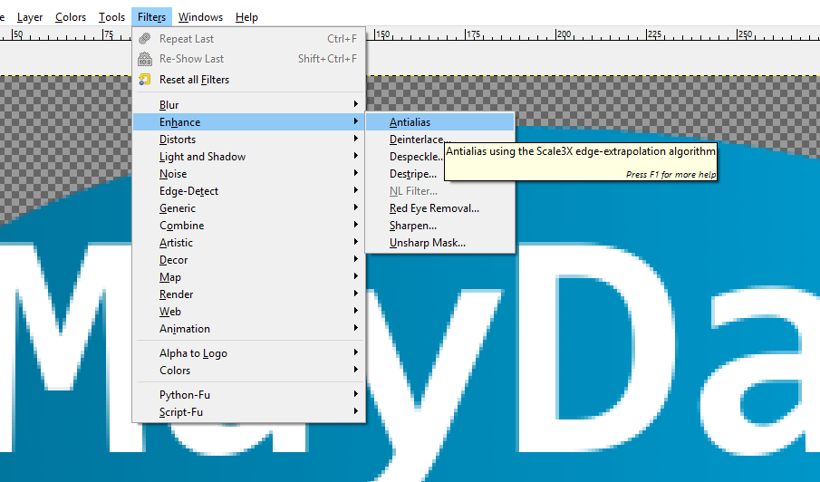
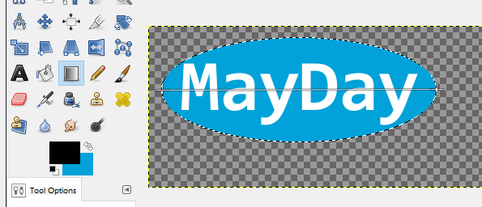
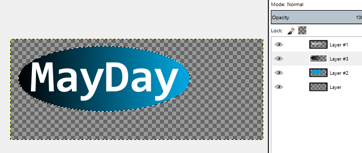
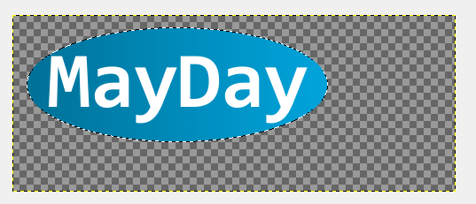
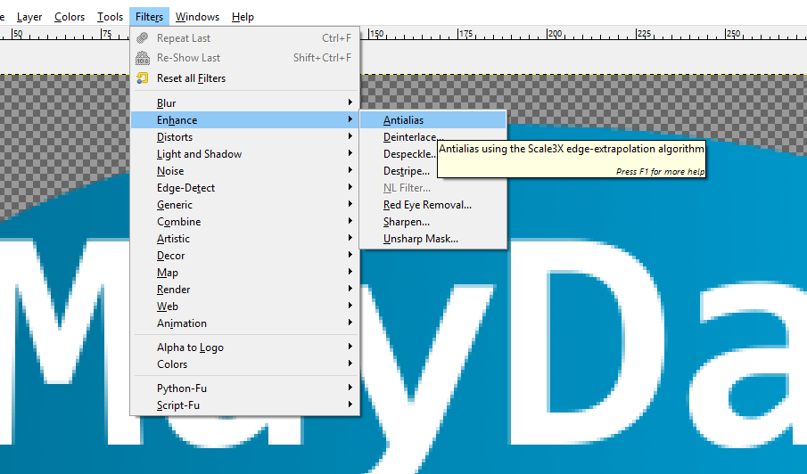

Web Tech Report - MF14820/JW14896
- A for HTML
- A for CSS
- A for JS
- A for PNG
- ? for SVG
- A for Server
- A for Database
- A/B for Dynamic pages
- >24 for Depth (out of 40)
HTML
We made use of the dot.js framework for html templating and used html 5 features.
CSS
How do we express this?
JS
How do we express this?
PNG
The Logo was created in GIMP by performing the following steps;
- Make transparent background image
- Write the text with text tool onto top layer
- Create an ellipse with circle select on new layer under text
- Fill the ellipse with blue
-
In a layer between blue and text make a black to transparent gradiant
(could have used blue gradient to blue, but this experiments with layer
opacity)
- Set layer opacity of black gradient to 30%
- Run antialias tool to smooth edges, resize canvas to desired dimenions
The following pictures capture this process.
 







SVG
Server
MIKE - Talk about https, sockets, certificates
In order to protect our users passwords, we used the stanford crypto library
to hash all the users passwords serverside, using a randomly and securely
generated salt which is at least the length of the hash function's output
for the most secure salting. In addition, the source code has a hardcoded
second salt called a pepper, which is an additional defense should the database
be stolen but not the sourcecode.
Database
Our database is interacted with via a separate DBWrapper.js module,
which controls all interaction with the database. The database itself is
designed to use relational linking between many tables that each handle a
specific part of a user's data, instead of just keeping all data in the same
table.
For security, the database does not store any plaintext passwords, it stores
both the salt and the hash of the "seasoned" password (the password has both
a salt and a pepper added to it). This ensures that a leaked database does not
easily compromise the security of our users (covered more in Server).
Additionally, our infrastructure is secure against SQL injection.
Dynamic Pages
MIKE
Depth
For our depth in the website, we have used WebRTC to send a user's desktop
screen capture across to a helper user, they are then able to see the user's
screen and advise them. MIKE